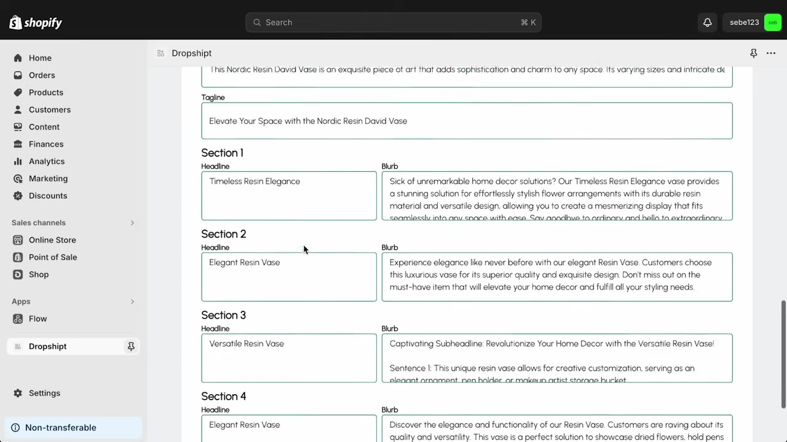
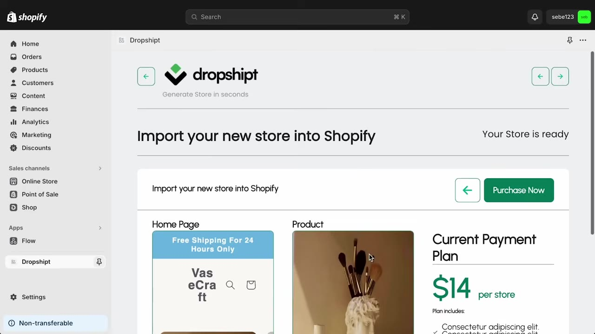
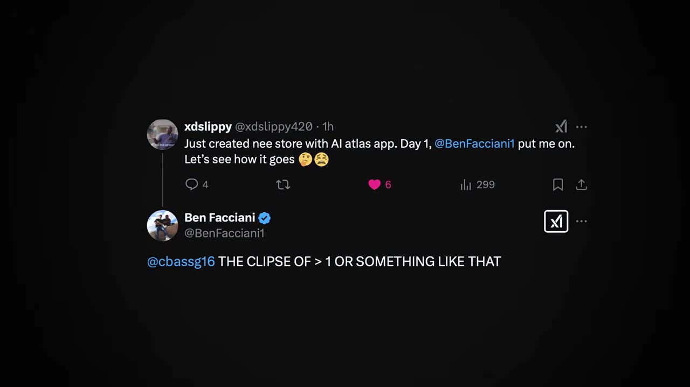
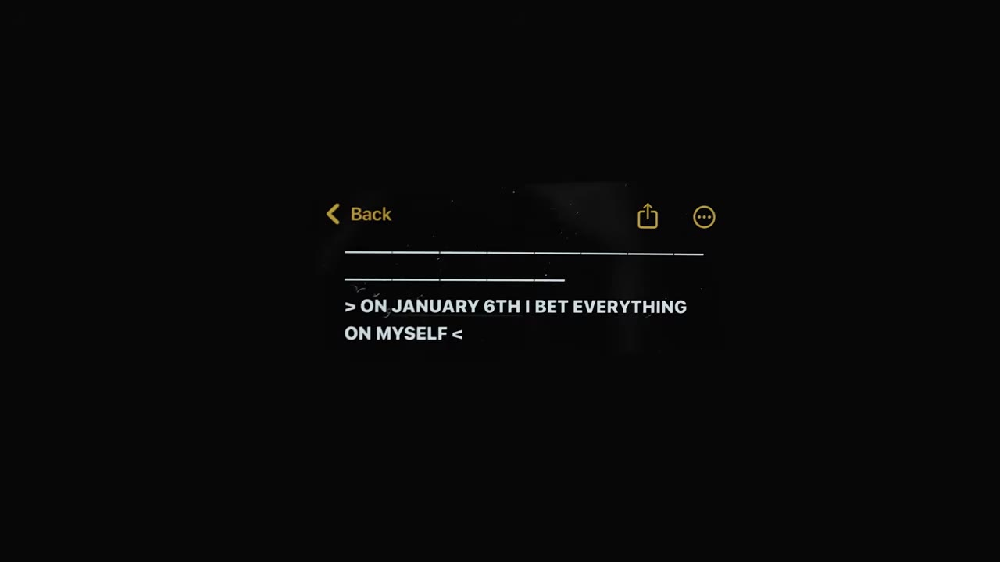
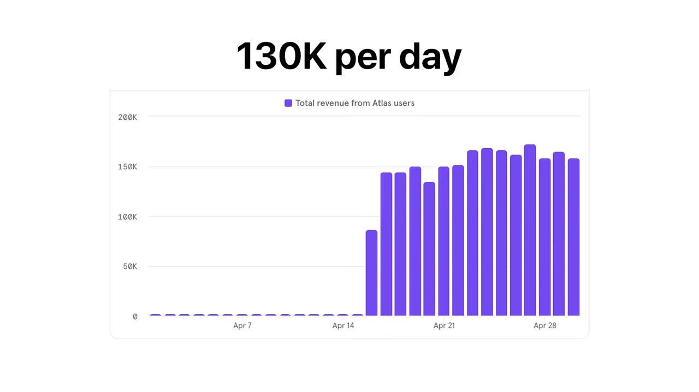
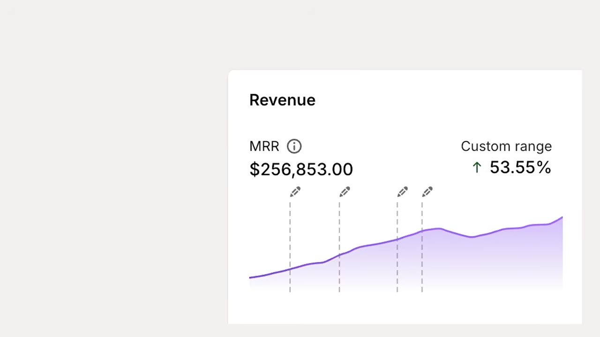

After eight years of jumping from business to business — dropshipping, YouTube, affiliate marketing, agencies — one side project accidentally opened the door to the SaaS company he always wanted. Here's how it happened.
Watch on YouTubeSebastian Georgu grew up broke — three siblings, single mom, barely able to afford anything. At 17 he discovered dropshipping and went all-in. Over eight years he played musical chairs: dropshipping → YouTube → affiliate marketing → his own marketing agency → investing → back to dropshipping → more affiliate → even day trading. Each jump made more money, but he wasn't building businesses. He was monetizing attention — his face, talking on a screen — in different ways.
"Am I even capable of building something real? Am I capable of building something that doesn't collapse the second I step away from it?"
At the height of it all, he stopped. Didn't want to post any more reals, any more YouTube videos. But he had no idea where to start. So he did nothing — spent saved-up money, traveled, found a girl, watched movies. And while drifting into the fog, he secretly built a little side project.
He was building a Shopify app — originally intended as an AI store builder, a convenient tool to help dropshippers build their entire store and product pages with one click. Honestly, at the time it was "pretty terrible." The copy was bad. The theme was bad. The layouts were bad. All very MVP, very side-project.

But as each day passed, he started to see the potential. Not only could this be the real business he was desperately after, but it could actually change people's lives and the ecom space in general. So even though it was far from perfect, he decided to launch it on the Shopify App Store anyway.
Day one of the Shopify App Store launch: four or five people bought at $14 each. He was blown away — "These are really not that good. Who would pay $14 to buy this?"

Day two: more people bought. Day three: more people bought. He was confused. He knew the product wasn't amazing — it was "beta mode" — but the market clearly desired it. So he took action: brought on a technical person, hired more developers, added new features, tried new things. The AI store builder needed to be better, needed to be intelligent. The product got better but the business was still break-even.
"The product did get better, but the business was still break even. And honestly, it still kind of sucked."
Someone on the team suggested switching to a monthly recurring subscription. He immediately said, "That's completely stupid." It was completely stupid — but they did it anyway. People still bought it. Made no sense. Building a store with AI is a one-time thing, right?
Then they launched an annual plan: "$560 upfront" for a discount. People bought it pretty much right away. In his mind, seeing two to three thousand in monthly recurring revenue, he thought, "I have a SaaS company now. I guess."

Slowly but surely, they grinded up to $10K/mo MRR, then $15K/mo. His dream of building a SaaS had accidentally opened through the back door — completely unintentional.
"I didn't know how I was going to get into one. And in such an ironic way, I accidentally opened up the door to myself to start a SaaS company."
They challenged themselves to hit $20K MRR by month-end. When they failed, they all ran a half marathon. "I was sore for 3 days. I felt muscles that I had never felt in my body before." They eventually hit $20K as well.
Then the real crisis hit. His co-founder and he could no longer work together — reaching their breaking point, different styles of work, damaging their relationship. One had to go. Either spend six figures in straight cash to buy out his co-founder's equity, or walk away and let his dream fall apart.

This business had zero guarantees. Zero promises. A new business, a new industry, building without his face — something he'd never done before. He had already invested $50K and months of time and energy. To get his co-founder out would cost over six figures.
"Do I walk away and let this thing die, or do I place a quarter of a million dollar bet on myself?"
After a long time of thinking and stress, he pushed all his chips in. For the first time truly, he had his back against the wall. The boats were burned. Either swim or drown. Everything was riding on this.
In January, they hit $35K MRR and were growing slowly but consistently. Then one day it stopped. Not only did growth stop — they started dying. From higher $30K MRR back down to almost $30K, losing about 25% of monthly income.
"I knew I am not it. I can't do it. This isn't for me."
That fear deep down inside of him — that he couldn't do this — became true. Very tough moment. Very stressful. Very hard.
But then the turning point: if he wanted this to truly work, he had to build something good. Something so good he would use it himself. They asked: what do dropshippers care about most? What are they using most right now?
Answer: a really competent, professional, high-quality theme. High-converting product pages with tons of theme elements. Bundles and upsells. All done super quickly and super well.
They launched Atlas 2.0 — a new, better, much-improved version of their theme in the store. And then they started tracking user revenue data.

Within a week of tracking it, they hit over $1 million in GMV. At the time it was going up by $60–70K per day. Looking back at the time of filming, they had over $61 million in GMV and were well on their way to $100 million. MRR was growing faster than ever. People were sharing it with friends, with their Discord communities, with their free courses.
"The fire of success and growth started to spread. And it spread fast."
His wedding was coming up. He was getting married and leaving America to go be in Europe for a long time. Right before leaving, God connected him with a very special person — Ben Jabwani (Ben Jablonski), who sold his company Privy for over $100M in one of the biggest Shopify acquisitions ever.
Ben loved Atlas, loved Sebastian's energy, believed in him. "This is insane and I believe in you guys. You guys are a rocket ship." For the first time in his life, someone didn't believe in his cars, his clout, his followers, his YouTube channel — they believed in him as a business person, as a CEO, as somebody doing a good job growing a business.
"This shattered a wall of limiting beliefs that I had about myself. And for the first time ever, I actually felt like I could do this."
Ben gets pitched by a lot of companies. He picked Atlas. Today, Ben sits on their board.
Sebastian spent 3 months in Europe — Italy, Monaco for F1, Barcelona, Paris, Switzerland for two weeks, Austria, Vienna, Romania, London, New York on the way home. He expected things to slow down.

Instead, throughout his Euro summer, they went from $100K MRR to over $250,000 MRR — all during his honeymoon. He hadn't mentioned Atlas anywhere. He had built a team. The team knew what to do.
"It's not even a question. If it wasn't for them, none of this would have been possible."
When he got home, the CEO of Mantle called — they might have broken the record for the fastest Shopify app to reach $1M in ARR. April 7th, 2025. All of this including trial value.
"This time, it wasn't luck. It was real. And this isn't the end of the story. This is chapter one."
Today, Atlas has over 10,000 paying customers. 15 people on the team. They're becoming a dropshipping AI co-pilot — a platform that supports people from $0 in revenue all the way up to $300K per month in sales.
"I'm no longer the product. The product is the product. And the product that we built, people love. They love it even though they don't know that I'm the one that built it."